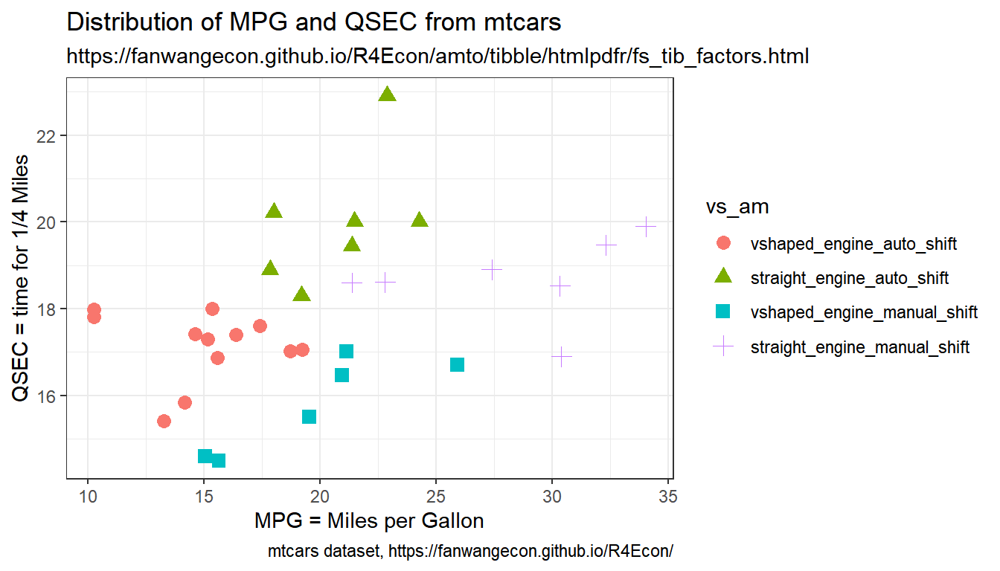

Chapter 1 Array, Matrix, Dataframe
1.1 List
1.1.1 Multiple Dimensional List
Go back to fan’s REconTools Package, R Code Examples Repository (bookdown site), or Intro Stats with R Repository (bookdown site).
- r list tutorial
- r vector vs list
- r initialize empty multiple element list
- r name rows and columns of 2 dimensional list
- r row and colum names of list
- list dimnames
- r named list to string
1.1.1.1 Named List of Matrixes
Save a list of matrixes. Retrieve Element of that list via loop.
# Define an array to loop over
ar_fl_mean <- c(10, 20, 30)
# store restuls in named list
ls_mt_res = vector(mode = "list", length = length(ar_fl_mean))
ar_st_names <- paste0('mean', ar_fl_mean)
names(ls_mt_res) <- ar_st_names
# Loop and generat a list of dataframes
for (it_fl_mean in seq(1, length(ar_fl_mean))) {
fl_mean = ar_fl_mean[it_fl_mean]
# dataframe
set.seed(it_fl_mean)
tb_combine <- as_tibble(
matrix(rnorm(4,mean=fl_mean,sd=1), nrow=2, ncol=3)
) %>%
rowid_to_column(var = "id") %>%
rename_all(~c(c('id','var1','varb','vartheta')))
ls_mt_res[[it_fl_mean]] = tb_combine
}
# Retrieve elements
print(ls_mt_res[[1]])
print(ls_mt_res$mean10)
print(ls_mt_res[['mean10']])
# Print via Loop
for (it_fl_mean in seq(1, length(ar_fl_mean))) {
tb_combine = ls_mt_res[[it_fl_mean]]
print(tb_combine)
}1.1.1.2 One Dimensional Named List
- define list
- slice list
- print r named list as a single line string
# Define Lists
ls_num <- list(1,2,3)
ls_str <- list('1','2','3')
ls_num_str <- list(1,2,'3')
# Named Lists
ar_st_names <- c('e1','e2','e3')
ls_num_str_named <- ls_num_str
names(ls_num_str_named) <- ar_st_names
# Add Element to Named List
ls_num_str_named$e4 <- 'this is added'- r print input as string
- r print parameter code as string
- How to convert variable (object) name into String
The function below ffi_lst2str is also a function in REconTools: ff_sup_lst2str.
# list to String printing function
ffi_lst2str <- function(ls_list, st_desc, bl_print=TRUE) {
# string desc
if(missing(st_desc)){
st_desc <- deparse(substitute(ls_list))
}
# create string
st_string_from_list = paste0(paste0(st_desc, ':'),
paste(names(ls_list), ls_list, sep="=", collapse=";" ))
if (bl_print){
print(st_string_from_list)
}
}
# print full
ffi_lst2str(ls_num)## [1] "ls_num:=1;=2;=3"## [1] "ls_str:=1;=2;=3"## [1] "ls_num_str:=1;=2;=3"## [1] "ls_num_str_named:e1=1;e2=2;e3=3;e4=this is added"## [1] "ls_num[2:3]:=2;=3"## [1] "ls_str[2:3]:=2;=3"## [1] "ls_num_str[2:4]:=2;=3;=NULL"## [1] "ls_num_str_named[c(\"e2\", \"e3\", \"e4\")]:e2=2;e3=3;e4=this is added"1.1.1.3 Two Dimensional Unnamed List
Generate a multiple dimensional list:
- Initiate with an N element empty list
- Reshape list to M by Q
- Fill list elements
- Get list element by row and column number
List allows for different data types to be stored together.
Note that element specific names in named list are not preserved when the list is reshaped to be two dimensional. Two dimensional list, however, could have row and column names.
# Dimensions
it_M <- 2
it_Q <- 3
it_N <- it_M*it_Q
# Initiate an Empty MxQ=N element list
ls_2d_flat <- vector(mode = "list", length = it_N)
ls_2d <- ls_2d_flat
# Named flat
ls_2d_flat_named <- ls_2d_flat
names(ls_2d_flat_named) <- paste0('e',seq(1,it_N))
ls_2d_named <- ls_2d_flat_named
# Reshape
dim(ls_2d) <- c(it_M, it_Q)
# named 2d list can not carry 1d name after reshape
dim(ls_2d_named) <- c(it_M, it_Q)Print Various objects generated above, print list flattened.
## [1] "ls_2d_flat_named:e1=NULL;e2=NULL;e3=NULL;e4=NULL;e5=NULL;e6=NULL"## [1] "ls_2d_named:=NULL;=NULL;=NULL;=NULL;=NULL;=NULL"## [,1] [,2] [,3]
## [1,] NULL NULL NULL
## [2,] NULL NULL NULLSelect element from list:
## [1] "ls_2d[[1,2]]"## NULL1.1.1.4 Define Two Dimensional Named LIst
For naming two dimensional lists, rowname and colname does not work. Rather, we need to use dimnames. Note that in addition to dimnames, we can continue to have element specific names. Both can co-exist. But note that the element specific names are not preserved after dimension transform, so need to be redefined afterwards.
How to select an element of a two dimensional list:
- row and column names: dimnames, ls_2d_flat_named[[‘row2’,‘col2’]]
- named elements: names, ls_2d_flat_named[[‘e5’]]
- select by index: index, ls_2d_flat_named[[5]]
- converted two dimensional named list to tibble/matrix
Neither dimnames nor names are required, but both can be used to select elements.
# Dimensions
it_M <- 3
it_Q <- 4
it_N <- it_M*it_Q
# Initiate an Empty MxQ=N element list
ls_2d_flat_named <- vector(mode = "list", length = it_N)
dim(ls_2d_flat_named) <- c(it_M, it_Q)
# Fill with values
for (it_Q_ctr in seq(1,it_Q)) {
for (it_M_ctr in seq(1,it_M)) {
# linear index
ls_2d_flat_named[[it_M_ctr, it_Q_ctr]] <- (it_Q_ctr-1)*it_M+it_M_ctr
}
}
# Replace row names, note rownames does not work
dimnames(ls_2d_flat_named)[[1]] <- paste0('row',seq(1,it_M))
dimnames(ls_2d_flat_named)[[2]] <- paste0('col',seq(1,it_Q))
# Element Specific Names
names(ls_2d_flat_named) <- paste0('e',seq(1,it_N))
# Convert to Matrix
tb_2d_flat_named <- as_tibble(ls_2d_flat_named) %>% unnest()
mt_2d_flat_named <- as.matrix(tb_2d_flat_named)Print various objects generated above:
## [1] "ls_2d_flat_named"## col1 col2 col3 col4
## row1 1 4 7 10
## row2 2 5 8 11
## row3 3 6 9 12
## attr(,"names")
## [1] "e1" "e2" "e3" "e4" "e5" "e6" "e7" "e8" "e9" "e10" "e11" "e12"## [1] "tb_2d_flat_named"## [1] "mt_2d_flat_named"## col1 col2 col3 col4
## [1,] 1 4 7 10
## [2,] 2 5 8 11
## [3,] 3 6 9 12Select elements from list:
## [1] "ls_2d_flat_named[[\"row2\", \"col2\"]]:=5"## [1] "ls_2d_flat_named[[\"e5\"]]:=5"## [1] "ls_2d_flat_named[[5]]:=5"1.2 Array
1.2.1 Array Basics
Go back to fan’s REconTools Package, R Code Examples Repository (bookdown site), or Intro Stats with R Repository (bookdown site).
1.2.1.1 Multidimesional Arrays
1.2.1.1.1 Repeat one Number by the Size of an Array
## [1] 0 0 01.2.1.1.2 Generate 2 Dimensional Array
# Multidimensional Array
# 1 is r1c1t1, 1.5 in r2c1t1, 0 in r1c2t1, etc.
# Three dimensions, row first, column second, and tensor third
x <- array(c(1, 1.5, 0, 2, 0, 4, 0, 3), dim=c(2, 2, 2))
dim(x)## [1] 2 2 2## , , 1
##
## [,1] [,2]
## [1,] 1.0 0
## [2,] 1.5 2
##
## , , 2
##
## [,1] [,2]
## [1,] 0 0
## [2,] 4 31.2.1.2 Array Slicing
1.2.1.2.1 Remove Elements of Array
Select elements with direct indexing, or with head and tail functions. Get the first two elements of three elements array.
# Remove last element of array
vars.group.bydf <- c('23','dfa', 'wer')
vars.group.bydf[-length(vars.group.bydf)]## [1] "23" "dfa"## [1] "23" "dfa"## [1] "23" "dfa"Get last two elements of array.
# Remove first element of array
vars.group.bydf <- c('23','dfa', 'wer')
vars.group.bydf[2:length(vars.group.bydf)]## [1] "dfa" "wer"## [1] "dfa" "wer"## [1] "dfa" "wer"1.2.1.3 NA in Array
1.2.1.4 Notations
1.2.1.4.1 e notation
- Case one: 1.149946e+00
- this is approximately: 1.14995
- Case two: 9.048038e-01
- this is approximately: 0.90480
- Case three: 9.048038e-01
- this is approximately: 0.90480
1.2.2 Generate Arrays
Go back to fan’s REconTools Package, R Code Examples Repository (bookdown site), or Intro Stats with R Repository (bookdown site).
1.2.2.1 Generate Special Arrays
1.2.2.1.1 Log Space Arrays
Often need to generate arrays on log rather than linear scale, below is log 10 scaled grid.
# Parameters
it.lower.bd.inc.cnt <- 3
fl.log.lower <- -10
fl.log.higher <- -9
fl.min.rescale <- 0.01
it.log.count <- 4
# Generate
ar.fl.log.rescaled <- exp(log(10)*seq(log10(fl.min.rescale),
log10(fl.min.rescale +
(fl.log.higher-fl.log.lower)),
length.out=it.log.count))
ar.fl.log <- ar.fl.log.rescaled + fl.log.lower - fl.min.rescale
# Print
ar.fl.log## [1] -10.000000 -9.963430 -9.793123 -9.0000001.2.3 String Arrays
Go back to fan’s REconTools Package, R Code Examples Repository (bookdown site), or Intro Stats with R Repository (bookdown site).
1.2.3.1 String Replace
- r string wildcard replace between regex
- R - replace part of a string using wildcards
# String replacement
gsub(x = paste0(unique(df.slds.stats.perc$it.inner.counter), ':',
unique(df.slds.stats.perc$z_n_a_n), collapse = ';'),
pattern = "\n",
replacement = "")
gsub(x = var, pattern = "\n", replacement = "")
gsub(x = var.input, pattern = "\\.", replacement = "_")String replaces a segment, search by wildcard. Given the string below, delete all text between carriage return and pound sign:
st_tex_text <- "\n% Lat2ex Comments\n\\newcommand{\\exa}{\\text{from external file: } \\alpha + \\beta}\n% More LaLatex Comments\n"
st_clean_a1 <- gsub("\\%.*?\\\n", "", st_tex_text)
st_clean_a2 <- gsub("L.*?x", "[LATEX]", st_tex_text)
print(paste0('st_tex_text:', st_tex_text))## [1] "st_tex_text:\n% Lat2ex Comments\n\\newcommand{\\exa}{\\text{from external file: } \\alpha + \\beta}\n% More LaLatex Comments\n"## [1] "st_clean_a1:\n\\newcommand{\\exa}{\\text{from external file: } \\alpha + \\beta}\n"## [1] "st_clean_a2:\n% [LATEX] Comments\n\\newcommand{\\exa}{\\text{from external file: } \\alpha + \\beta}\n% More [LATEX] Comments\n"String delete after a particular string:
st_tex_text <- "\\end{equation}\n}\n% Even more comments from Latex preamble"
st_clean_a1 <- gsub("\\\n%.*","", st_tex_text)
print(paste0('st_tex_text:', st_tex_text))## [1] "st_tex_text:\\end{equation}\n}\n% Even more comments from Latex preamble"## [1] "st_clean_a1:\\end{equation}\n}"1.2.3.1.1 Search If and Which String Contains
- r if string contains
- r if string contains either or grepl
- Use grepl to search either of multiple substrings in a text
Search for a single substring in a single string:
st_example_a <- 'C:/Users/fan/R4Econ/amto/tibble/fs_tib_basics.Rmd'
st_example_b <- 'C:/Users/fan/R4Econ/amto/tibble/_main.html'
grepl('_main', st_example_a)## [1] FALSE## [1] TRUESearch for if one of a set of substring exists in a set of strings. In particular which one of the elements of ls_spn contains at least one of the elements of ls_str_if_contains. In the example below, only the first path does not contain either the word aggregate or index in the path. This can be used after all paths have been found recursively in some folder to select only desired paths from the full set of possibilities:
ls_spn <- c("C:/Users/fan/R4Econ//panel/basic/fs_genpanel.Rmd",
"C:/Users/fan/R4Econ//summarize/aggregate/main.Rmd",
"C:/Users/fan/R4Econ//summarize/index/fs_index_populate.Rmd")
ls_str_if_contains <- c("aggregate", "index")
str_if_contains <- paste(ls_str_if_contains, collapse = "|")
grepl(str_if_contains, ls_spn)## [1] FALSE TRUE TRUE1.2.3.2 String Concatenate
## [1] "abc|efg"1.2.3.3 String Add Leading Zero
# Add Leading zero for integer values to allow for sorting when
# integers are combined into strings
it_z_n <- 1
it_a_n <- 192
print(sprintf("%02d", it_z_n))## [1] "01"## [1] "0192"1.2.3.4 Substring and File Name
From path, get file name without suffix.
- r string split
- r list last element
- r get file name from path
- r get file path no name
st_example <- 'C:/Users/fan/R4Econ/amto/tibble/fs_tib_basics.Rmd'
st_file_wth_suffix_s <- tail(strsplit(st_example, "/")[[1]],n=1)
st_file_wno_suffix_s <- sub('\\.Rmd$', '', basename(st_example))
st_fullpath_nosufx_s <- sub('\\.Rmd$', '', st_example)
st_lastpath_noname_s <- (dirname(st_example))
st_fullpath_noname_s <- dirname(st_example)
print(strsplit(st_example, "/"))## [[1]]
## [1] "C:" "Users" "fan" "R4Econ" "amto" "tibble"
## [7] "fs_tib_basics.Rmd"## [1] "fs_tib_basics.Rmd"## [1] "fs_tib_basics"## [1] "C:/Users/fan/R4Econ/amto/tibble/fs_tib_basics"## [1] "C:/Users/fan/R4Econ/amto/tibble"## [1] "C:/Users/fan/R4Econ/amto/tibble"1.2.4 Mesh Matrices, Arrays and Scalars
Go back to fan’s REconTools Package, R Code Examples Repository (bookdown site), or Intro Stats with R Repository (bookdown site).
- r expand.grid meshed array to matrix
- r meshgrid
- r array to matrix
- r reshape array to matrix
- dplyr permuations rows of matrix and element of array
- tidyr expand_grid mesh matrix and vector
1.2.4.1 Mesh Two or More Vectors with expand_grid
In the example below, we have a matrix that is 2 by 2 (endogenous states), a vector that is 3 by 1 (choices), and another matrix that is 4 by 3 (exogenous states shocks).
We want to generate a tibble dataset that meshes the matrix and the vector, so that all combinations show up. Additionally, we want to add some additional values that are common across all rows to the meshed dataframe.
Note expand_grid is a from tidyr 1.0.0.
# A. Generate the 5 by 2 Matrix (ENDO STATES)
# it_child_count = N, the number of children
it_N_child_cnt = 2
# P fixed parameters, nN is N dimensional, nP is P dimensional
ar_nN_A = seq(-2, 2, length.out = it_N_child_cnt)
ar_nN_alpha = seq(0.1, 0.9, length.out = it_N_child_cnt)
fl_rho = 0.1
fl_lambda = 1.1
mt_nP_A_alpha = cbind(ar_nN_A, ar_nN_alpha, fl_rho, fl_lambda)
ar_st_varnames <- c('s_A', 's_alpha', 'p_rho', 'p_lambda')
tb_states_endo <- as_tibble(mt_nP_A_alpha) %>%
rename_all(~c(ar_st_varnames)) %>%
rowid_to_column(var = "state_id")
# B. Choice Grid
it_N_choice_cnt = 3
fl_max = 10
fl_min = 0
ar_nN_d = seq(fl_min, fl_max, length.out = it_N_choice_cnt)
ar_st_varnames <- c('c_food')
tb_choices <- as_tibble(ar_nN_d) %>%
rename_all(~c(ar_st_varnames)) %>%
rowid_to_column(var = "choice_id")
# C. Shock Grid
set.seed(123)
it_N_shock_cnt = 4
ar_nQ_shocks = exp(rnorm(it_N_shock_cnt, mean=0, sd=1))
ar_st_varnames <- c('s_eps')
tb_states_exo <- as_tibble(ar_nQ_shocks) %>%
rename_all(~c(ar_st_varnames)) %>%
rowid_to_column(var = "shock_id")
# dataframe expand with other non expanded variables
ar_st_varnames <-
tb_states_shk_choices <- tb_states_endo %>%
expand_grid(tb_choices) %>%
expand_grid(tb_states_exo) %>%
select(state_id, choice_id, shock_id,
s_A, s_alpha, s_eps, c_food,
p_rho, p_lambda)
# display
kable(tb_states_shk_choices) %>% kable_styling_fc()| state_id | choice_id | shock_id | s_A | s_alpha | s_eps | c_food | p_rho | p_lambda |
|---|---|---|---|---|---|---|---|---|
| 1 | 1 | 1 | -2 | 0.1 | 0.5709374 | 0 | 0.1 | 1.1 |
| 1 | 1 | 2 | -2 | 0.1 | 0.7943926 | 0 | 0.1 | 1.1 |
| 1 | 1 | 3 | -2 | 0.1 | 4.7526783 | 0 | 0.1 | 1.1 |
| 1 | 1 | 4 | -2 | 0.1 | 1.0730536 | 0 | 0.1 | 1.1 |
| 1 | 2 | 1 | -2 | 0.1 | 0.5709374 | 5 | 0.1 | 1.1 |
| 1 | 2 | 2 | -2 | 0.1 | 0.7943926 | 5 | 0.1 | 1.1 |
| 1 | 2 | 3 | -2 | 0.1 | 4.7526783 | 5 | 0.1 | 1.1 |
| 1 | 2 | 4 | -2 | 0.1 | 1.0730536 | 5 | 0.1 | 1.1 |
| 1 | 3 | 1 | -2 | 0.1 | 0.5709374 | 10 | 0.1 | 1.1 |
| 1 | 3 | 2 | -2 | 0.1 | 0.7943926 | 10 | 0.1 | 1.1 |
| 1 | 3 | 3 | -2 | 0.1 | 4.7526783 | 10 | 0.1 | 1.1 |
| 1 | 3 | 4 | -2 | 0.1 | 1.0730536 | 10 | 0.1 | 1.1 |
| 2 | 1 | 1 | 2 | 0.9 | 0.5709374 | 0 | 0.1 | 1.1 |
| 2 | 1 | 2 | 2 | 0.9 | 0.7943926 | 0 | 0.1 | 1.1 |
| 2 | 1 | 3 | 2 | 0.9 | 4.7526783 | 0 | 0.1 | 1.1 |
| 2 | 1 | 4 | 2 | 0.9 | 1.0730536 | 0 | 0.1 | 1.1 |
| 2 | 2 | 1 | 2 | 0.9 | 0.5709374 | 5 | 0.1 | 1.1 |
| 2 | 2 | 2 | 2 | 0.9 | 0.7943926 | 5 | 0.1 | 1.1 |
| 2 | 2 | 3 | 2 | 0.9 | 4.7526783 | 5 | 0.1 | 1.1 |
| 2 | 2 | 4 | 2 | 0.9 | 1.0730536 | 5 | 0.1 | 1.1 |
| 2 | 3 | 1 | 2 | 0.9 | 0.5709374 | 10 | 0.1 | 1.1 |
| 2 | 3 | 2 | 2 | 0.9 | 0.7943926 | 10 | 0.1 | 1.1 |
| 2 | 3 | 3 | 2 | 0.9 | 4.7526783 | 10 | 0.1 | 1.1 |
| 2 | 3 | 4 | 2 | 0.9 | 1.0730536 | 10 | 0.1 | 1.1 |
Using expand_grid directly over arrays
1.2.4.2 Mesh Arrays with expand.grid
Given two arrays, mesh the two arrays together.
# use expand.grid to generate all combinations of two arrays
it_ar_A = 5
it_ar_alpha = 10
ar_A = seq(-2, 2, length.out=it_ar_A)
ar_alpha = seq(0.1, 0.9, length.out=it_ar_alpha)
mt_A_alpha = expand.grid(A = ar_A, alpha = ar_alpha)
mt_A_meshed = mt_A_alpha[,1]
dim(mt_A_meshed) = c(it_ar_A, it_ar_alpha)
mt_alpha_meshed = mt_A_alpha[,2]
dim(mt_alpha_meshed) = c(it_ar_A, it_ar_alpha)
# display
kable(mt_A_meshed) %>%
kable_styling_fc()| -2 | -2 | -2 | -2 | -2 | -2 | -2 | -2 | -2 | -2 |
| -1 | -1 | -1 | -1 | -1 | -1 | -1 | -1 | -1 | -1 |
| 0 | 0 | 0 | 0 | 0 | 0 | 0 | 0 | 0 | 0 |
| 1 | 1 | 1 | 1 | 1 | 1 | 1 | 1 | 1 | 1 |
| 2 | 2 | 2 | 2 | 2 | 2 | 2 | 2 | 2 | 2 |
| 0.1 | 0.1888889 | 0.2777778 | 0.3666667 | 0.4555556 | 0.5444444 | 0.6333333 | 0.7222222 | 0.8111111 | 0.9 |
| 0.1 | 0.1888889 | 0.2777778 | 0.3666667 | 0.4555556 | 0.5444444 | 0.6333333 | 0.7222222 | 0.8111111 | 0.9 |
| 0.1 | 0.1888889 | 0.2777778 | 0.3666667 | 0.4555556 | 0.5444444 | 0.6333333 | 0.7222222 | 0.8111111 | 0.9 |
| 0.1 | 0.1888889 | 0.2777778 | 0.3666667 | 0.4555556 | 0.5444444 | 0.6333333 | 0.7222222 | 0.8111111 | 0.9 |
| 0.1 | 0.1888889 | 0.2777778 | 0.3666667 | 0.4555556 | 0.5444444 | 0.6333333 | 0.7222222 | 0.8111111 | 0.9 |
Two Identical Arrays, individual attributes, each column is an individual for a matrix, and each row is also an individual.
# use expand.grid to generate all combinations of two arrays
it_ar_A = 5
ar_A = seq(-2, 2, length.out=it_ar_A)
mt_A_A = expand.grid(Arow = ar_A, Arow = ar_A)
mt_Arow = mt_A_A[,1]
dim(mt_Arow) = c(it_ar_A, it_ar_A)
mt_Acol = mt_A_A[,2]
dim(mt_Acol) = c(it_ar_A, it_ar_A)
# display
kable(mt_Arow) %>%
kable_styling_fc()| -2 | -2 | -2 | -2 | -2 |
| -1 | -1 | -1 | -1 | -1 |
| 0 | 0 | 0 | 0 | 0 |
| 1 | 1 | 1 | 1 | 1 |
| 2 | 2 | 2 | 2 | 2 |
| -2 | -1 | 0 | 1 | 2 |
| -2 | -1 | 0 | 1 | 2 |
| -2 | -1 | 0 | 1 | 2 |
| -2 | -1 | 0 | 1 | 2 |
| -2 | -1 | 0 | 1 | 2 |
1.3 Matrix
1.3.1 Generate Matrixes
Go back to fan’s REconTools Package, R Code Examples Repository (bookdown site), or Intro Stats with R Repository (bookdown site).
1.3.1.1 Create a N by 2 Matrix from 3 arrays
Names of each array become row names automatically.
ar_row_one <- c(-1,+1)
ar_row_two <- c(-3,-2)
ar_row_three <- c(0.35,0.75)
mt_n_by_2 <- rbind(ar_row_one, ar_row_two, ar_row_three)
kable(mt_n_by_2) %>%
kable_styling_fc()| ar_row_one | -1.00 | 1.00 |
| ar_row_two | -3.00 | -2.00 |
| ar_row_three | 0.35 | 0.75 |
1.3.1.2 Name Matrix Columns and Rows
# An empty matrix with Logical NA
mt_named <- matrix(data=NA, nrow=2, ncol=2)
colnames(mt_named) <- paste0('c', seq(1,2))
rownames(mt_named) <- paste0('r', seq(1,2))
mt_named## c1 c2
## r1 NA NA
## r2 NA NA1.3.1.3 Generate NA Matrix
Allocate with NA or NA_real_ or NA_int_. Clarity in type definition is preferred.
## logi [1:2, 1:2] NA NA NA NA# An empty matrix with numerica NA
mt_fl_na <- matrix(data=NA_real_, nrow=2, ncol=2)
mt_it_na <- matrix(data=NA_integer_, nrow=2, ncol=2)
str(mt_fl_na)## num [1:2, 1:2] NA NA NA NA## num [1:2, 1:2] NA NA NA NA1.3.1.4 Generate Random Matrixes
Random draw from the normal distribution, random draw from the uniform distribution, and combine resulting matrixes.
# Generate 15 random normal, put in 5 rows, and 3 columns
mt_rnorm <- matrix(rnorm(15,mean=0,sd=1), nrow=5, ncol=3)
# Generate 15 random normal, put in 5 rows, and 3 columns
mt_runif <- matrix(runif(15,min=0,max=1), nrow=5, ncol=5)
# Combine
mt_rnorm_runif <- cbind(mt_rnorm, mt_runif)
# Display
kable(mt_rnorm_runif) %>%
kable_styling_fc_wide()| 0.1292877 | -0.4456620 | -0.5558411 | 0.3181810 | 0.3688455 | 0.2659726 | 0.3181810 | 0.3688455 |
| 1.7150650 | 1.2240818 | 1.7869131 | 0.2316258 | 0.1524447 | 0.8578277 | 0.2316258 | 0.1524447 |
| 0.4609162 | 0.3598138 | 0.4978505 | 0.1428000 | 0.1388061 | 0.0458312 | 0.1428000 | 0.1388061 |
| -1.2650612 | 0.4007715 | -1.9666172 | 0.4145463 | 0.2330341 | 0.4422001 | 0.4145463 | 0.2330341 |
| -0.6868529 | 0.1106827 | 0.7013559 | 0.4137243 | 0.4659625 | 0.7989248 | 0.4137243 | 0.4659625 |
1.3.2 Linear Algebra
Go back to fan’s REconTools Package, R Code Examples Repository (bookdown site), or Intro Stats with R Repository (bookdown site).
1.3.2.1 Matrix Multiplication
Multiply Together a 3 by 2 matrix and a 2 by 1 vector
ar_row_one <- c(-1,+1)
ar_row_two <- c(-3,-2)
ar_row_three <- c(0.35,0.75)
mt_n_by_2 <- rbind(ar_row_one, ar_row_two, ar_row_three)
ar_row_four <- c(3,4)
# Matrix Multiplication
mt_out <- mt_n_by_2 %*% ar_row_four
print(mt_n_by_2)## [,1] [,2]
## ar_row_one -1.00 1.00
## ar_row_two -3.00 -2.00
## ar_row_three 0.35 0.75## [1] 3 4## [,1]
## ar_row_one 1.00
## ar_row_two -17.00
## ar_row_three 4.051.4 Variables in Dataframes
1.4.1 Generate Dataframe
Go back to fan’s REconTools Package, R Code Examples Repository (bookdown site), or Intro Stats with R Repository (bookdown site).
1.4.1.1 Simple Meshed Dataframe Name Columns
# 5 by 3 matrix
mt_rnorm_a <- matrix(rnorm(4,mean=0,sd=1), nrow=5, ncol=3)
# Column Names
ar_st_varnames <- c('id','var1','varb','vartheta')
# Combine to tibble, add name col1, col2, etc.
tb_combine <- as_tibble(mt_rnorm_a) %>%
rowid_to_column(var = "id") %>%
rename_all(~c(ar_st_varnames))
# Display
kable(tb_combine) %>% kable_styling_fc()| id | var1 | varb | vartheta |
|---|---|---|---|
| 1 | -1.1655448 | -0.8185157 | 0.6849361 |
| 2 | -0.8185157 | 0.6849361 | -0.3200564 |
| 3 | 0.6849361 | -0.3200564 | -1.1655448 |
| 4 | -0.3200564 | -1.1655448 | -0.8185157 |
| 5 | -1.1655448 | -0.8185157 | 0.6849361 |
1.4.1.2 Generate Tibble given Matrixes and Arrays
Given Arrays and Matrixes, Generate Tibble and Name Variables/Columns
- naming tibble columns
- tibble variable names
- dplyr rename tibble
- dplyr rename tibble all variables
- dplyr rename all columns by index
- dplyr tibble add index column
- see also: SO-51205520
# Base Inputs
ar_col <- c(-1,+1)
mt_rnorm_a <- matrix(rnorm(4,mean=0,sd=1), nrow=2, ncol=2)
mt_rnorm_b <- matrix(rnorm(4,mean=0,sd=1), nrow=2, ncol=4)
# Combine Matrix
mt_combine <- cbind(ar_col, mt_rnorm_a, mt_rnorm_b)
colnames(mt_combine) <- c('ar_col',
paste0('matcolvar_grpa_', seq(1,dim(mt_rnorm_a)[2])),
paste0('matcolvar_grpb_', seq(1,dim(mt_rnorm_b)[2])))
# Variable Names
ar_st_varnames <- c('var_one',
paste0('tibcolvar_ga_', c(1,2)),
paste0('tibcolvar_gb_', c(1,2,3,4)))
# Combine to tibble, add name col1, col2, etc.
tb_combine <- as_tibble(mt_combine) %>% rename_all(~c(ar_st_varnames))
# Add an index column to the dataframe, ID column
tb_combine <- tb_combine %>% rowid_to_column(var = "ID")
# Change all gb variable names
tb_combine <- tb_combine %>%
rename_at(vars(starts_with("tibcolvar_gb_")),
funs(str_replace(., "_gb_", "_gbrenamed_")))
# Tibble back to matrix
mt_tb_combine_back <- data.matrix(tb_combine)
# Display
kable(mt_combine) %>% kable_styling_fc_wide()| ar_col | matcolvar_grpa_1 | matcolvar_grpa_2 | matcolvar_grpb_1 | matcolvar_grpb_2 | matcolvar_grpb_3 | matcolvar_grpb_4 |
|---|---|---|---|---|---|---|
| -1 | -1.3115224 | -0.1294107 | -0.1513960 | -3.2273228 | -0.1513960 | -3.2273228 |
| 1 | -0.5996083 | 0.8867361 | 0.3297912 | -0.7717918 | 0.3297912 | -0.7717918 |
| ID | var_one | tibcolvar_ga_1 | tibcolvar_ga_2 | tibcolvar_gbrenamed_1 | tibcolvar_gbrenamed_2 | tibcolvar_gbrenamed_3 | tibcolvar_gbrenamed_4 |
|---|---|---|---|---|---|---|---|
| 1 | -1 | -1.3115224 | -0.1294107 | -0.1513960 | -3.2273228 | -0.1513960 | -3.2273228 |
| 2 | 1 | -0.5996083 | 0.8867361 | 0.3297912 | -0.7717918 | 0.3297912 | -0.7717918 |
| ID | var_one | tibcolvar_ga_1 | tibcolvar_ga_2 | tibcolvar_gbrenamed_1 | tibcolvar_gbrenamed_2 | tibcolvar_gbrenamed_3 | tibcolvar_gbrenamed_4 |
|---|---|---|---|---|---|---|---|
| 1 | -1 | -1.3115224 | -0.1294107 | -0.1513960 | -3.2273228 | -0.1513960 | -3.2273228 |
| 2 | 1 | -0.5996083 | 0.8867361 | 0.3297912 | -0.7717918 | 0.3297912 | -0.7717918 |
1.4.1.3 Rename Tibble with Numeric Column Names
After reshaping, often could end up with variable names that are all numeric, intgers for example, how to rename these variables to add a common prefix for example.
# Base Inputs
ar_col <- c(-1,+1)
mt_rnorm_c <- matrix(rnorm(4,mean=0,sd=1), nrow=5, ncol=10)
mt_combine <- cbind(ar_col, mt_rnorm_c)
# Variable Names
ar_it_cols_ctr <- seq(1, dim(mt_rnorm_c)[2])
ar_st_varnames <- c('var_one', ar_it_cols_ctr)
# Combine to tibble, add name col1, col2, etc.
tb_combine <- as_tibble(mt_combine) %>% rename_all(~c(ar_st_varnames))
# Add an index column to the dataframe, ID column
tb_combine_ori <- tb_combine %>% rowid_to_column(var = "ID")
# Change all gb variable names
tb_combine <- tb_combine_ori %>%
rename_at(
vars(num_range('',ar_it_cols_ctr)),
funs(paste0("rho", . , 'var'))
)
# Display
kable(tb_combine_ori) %>% kable_styling_fc_wide()| ID | var_one | 1 | 2 | 3 | 4 | 5 | 6 | 7 | 8 | 9 | 10 |
|---|---|---|---|---|---|---|---|---|---|---|---|
| 1 | -1 | 0.2865486 | -1.2205120 | 0.4345504 | 0.8001769 | 0.2865486 | -1.2205120 | 0.4345504 | 0.8001769 | 0.2865486 | -1.2205120 |
| 2 | 1 | -1.2205120 | 0.4345504 | 0.8001769 | 0.2865486 | -1.2205120 | 0.4345504 | 0.8001769 | 0.2865486 | -1.2205120 | 0.4345504 |
| 3 | -1 | 0.4345504 | 0.8001769 | 0.2865486 | -1.2205120 | 0.4345504 | 0.8001769 | 0.2865486 | -1.2205120 | 0.4345504 | 0.8001769 |
| 4 | 1 | 0.8001769 | 0.2865486 | -1.2205120 | 0.4345504 | 0.8001769 | 0.2865486 | -1.2205120 | 0.4345504 | 0.8001769 | 0.2865486 |
| 5 | -1 | 0.2865486 | -1.2205120 | 0.4345504 | 0.8001769 | 0.2865486 | -1.2205120 | 0.4345504 | 0.8001769 | 0.2865486 | -1.2205120 |
| ID | var_one | rho1var | rho2var | rho3var | rho4var | rho5var | rho6var | rho7var | rho8var | rho9var | rho10var |
|---|---|---|---|---|---|---|---|---|---|---|---|
| 1 | -1 | 0.2865486 | -1.2205120 | 0.4345504 | 0.8001769 | 0.2865486 | -1.2205120 | 0.4345504 | 0.8001769 | 0.2865486 | -1.2205120 |
| 2 | 1 | -1.2205120 | 0.4345504 | 0.8001769 | 0.2865486 | -1.2205120 | 0.4345504 | 0.8001769 | 0.2865486 | -1.2205120 | 0.4345504 |
| 3 | -1 | 0.4345504 | 0.8001769 | 0.2865486 | -1.2205120 | 0.4345504 | 0.8001769 | 0.2865486 | -1.2205120 | 0.4345504 | 0.8001769 |
| 4 | 1 | 0.8001769 | 0.2865486 | -1.2205120 | 0.4345504 | 0.8001769 | 0.2865486 | -1.2205120 | 0.4345504 | 0.8001769 | 0.2865486 |
| 5 | -1 | 0.2865486 | -1.2205120 | 0.4345504 | 0.8001769 | 0.2865486 | -1.2205120 | 0.4345504 | 0.8001769 | 0.2865486 | -1.2205120 |
1.4.1.4 Tibble Row and Column and Summarize
Show what is in the table: 1, column and row names; 2, contents inside table.
## [1] "1" "2" "3" "4" "5" "6" "7" "8" "9" "10" "11" "12" "13" "14" "15" "16" "17" "18" "19" "20" "21"
## [22] "22" "23" "24" "25" "26" "27" "28" "29" "30" "31" "32" "33" "34" "35" "36" "37" "38" "39" "40" "41" "42"
## [43] "43" "44" "45" "46" "47" "48" "49" "50" "51" "52" "53" "54" "55" "56" "57" "58" "59" "60" "61" "62" "63"
## [64] "64" "65" "66" "67" "68" "69" "70" "71" "72" "73" "74" "75" "76" "77" "78" "79" "80" "81" "82" "83" "84"
## [85] "85" "86" "87" "88" "89" "90" "91" "92" "93" "94" "95" "96" "97" "98" "99" "100" "101" "102" "103" "104" "105"
## [106] "106" "107" "108" "109" "110" "111" "112" "113" "114" "115" "116" "117" "118" "119" "120" "121" "122" "123" "124" "125" "126"
## [127] "127" "128" "129" "130" "131" "132" "133" "134" "135" "136" "137" "138" "139" "140" "141" "142" "143" "144" "145" "146" "147"
## [148] "148" "149" "150"## [1] "Sepal.Length" "Sepal.Width" "Petal.Length" "Petal.Width" "Species"## [1] "Sepal.Length" "Sepal.Width" "Petal.Length" "Petal.Width" "Species"## Sepal.Length Sepal.Width Petal.Length Petal.Width Species
## Min. :4.300 Min. :2.000 Min. :1.000 Min. :0.100 setosa :50
## 1st Qu.:5.100 1st Qu.:2.800 1st Qu.:1.600 1st Qu.:0.300 versicolor:50
## Median :5.800 Median :3.000 Median :4.350 Median :1.300 virginica :50
## Mean :5.843 Mean :3.057 Mean :3.758 Mean :1.199
## 3rd Qu.:6.400 3rd Qu.:3.300 3rd Qu.:5.100 3rd Qu.:1.800
## Max. :7.900 Max. :4.400 Max. :6.900 Max. :2.5001.4.1.5 Tibble Sorting
- dplyr arrange desc reverse
- dplyr sort
# Sort in Ascending Order
tb_iris %>% select(Species, Sepal.Length, everything()) %>%
arrange(Species, Sepal.Length) %>% head(10) %>%
kable() %>% kable_styling_fc()| Species | Sepal.Length | Sepal.Width | Petal.Length | Petal.Width |
|---|---|---|---|---|
| setosa | 4.3 | 3.0 | 1.1 | 0.1 |
| setosa | 4.4 | 2.9 | 1.4 | 0.2 |
| setosa | 4.4 | 3.0 | 1.3 | 0.2 |
| setosa | 4.4 | 3.2 | 1.3 | 0.2 |
| setosa | 4.5 | 2.3 | 1.3 | 0.3 |
| setosa | 4.6 | 3.1 | 1.5 | 0.2 |
| setosa | 4.6 | 3.4 | 1.4 | 0.3 |
| setosa | 4.6 | 3.6 | 1.0 | 0.2 |
| setosa | 4.6 | 3.2 | 1.4 | 0.2 |
| setosa | 4.7 | 3.2 | 1.3 | 0.2 |
# Sort in Descending Order
tb_iris %>% select(Species, Sepal.Length, everything()) %>%
arrange(desc(Species), desc(Sepal.Length)) %>% head(10) %>%
kable() %>% kable_styling_fc()| Species | Sepal.Length | Sepal.Width | Petal.Length | Petal.Width |
|---|---|---|---|---|
| virginica | 7.9 | 3.8 | 6.4 | 2.0 |
| virginica | 7.7 | 3.8 | 6.7 | 2.2 |
| virginica | 7.7 | 2.6 | 6.9 | 2.3 |
| virginica | 7.7 | 2.8 | 6.7 | 2.0 |
| virginica | 7.7 | 3.0 | 6.1 | 2.3 |
| virginica | 7.6 | 3.0 | 6.6 | 2.1 |
| virginica | 7.4 | 2.8 | 6.1 | 1.9 |
| virginica | 7.3 | 2.9 | 6.3 | 1.8 |
| virginica | 7.2 | 3.6 | 6.1 | 2.5 |
| virginica | 7.2 | 3.2 | 6.0 | 1.8 |
1.4.1.6 REconTools Summarize over Tible
Use R4Econ’s summary tool.
| stats | n | NAobs | ZEROobs | mean | sd | cv | min | p01 | p05 | p10 | p25 | p50 | p75 | p90 | p95 | p99 | max |
| Petal.Length | 150 | 0 | 0 | 3.758000 | 1.7652982 | 0.4697441 | 1.0 | 1.149 | 1.300 | 1.4 | 1.6 | 4.35 | 5.1 | 5.80 | 6.100 | 6.700 | 6.9 |
| Petal.Width | 150 | 0 | 0 | 1.199333 | 0.7622377 | 0.6355511 | 0.1 | 0.100 | 0.200 | 0.2 | 0.3 | 1.30 | 1.8 | 2.20 | 2.300 | 2.500 | 2.5 |
| Sepal.Length | 150 | 0 | 0 | 5.843333 | 0.8280661 | 0.1417113 | 4.3 | 4.400 | 4.600 | 4.8 | 5.1 | 5.80 | 6.4 | 6.90 | 7.255 | 7.700 | 7.9 |
| Sepal.Width | 150 | 0 | 0 | 3.057333 | 0.4358663 | 0.1425642 | 2.0 | 2.200 | 2.345 | 2.5 | 2.8 | 3.00 | 3.3 | 3.61 | 3.800 | 4.151 | 4.4 |
1.4.2 Factor Label and Combine
Go back to fan’s REconTools Package, R Code Examples Repository (bookdown site), or Intro Stats with R Repository (bookdown site).
1.4.2.1 Factor, Label, Cross and Graph
Generate a Scatter plot with different colors representing different categories. There are multiple underlying factor/categorical variables, for example two binary variables. Generate scatter plot with colors for the combinations of these two binary variables.
We combine here the vs and am variables from the mtcars dataset. vs is engine shape, am is auto or manual shift. We will generate a scatter plot of mpg and qsec over four categories with different colors.
- am: Transmission (0 = automatic, 1 = manual)
- vs: Engine (0 = V-shaped, 1 = straight)
- mpg: miles per galon
- qsec: 1/4 mile time
# First make sure these are factors
tb_mtcars <- as_tibble(mtcars) %>%
mutate(vs = as_factor(vs), am = as_factor(am))
# Second Label the Factors
am_levels <- c(auto_shift = "0", manual_shift = "1")
vs_levels <- c(vshaped_engine = "0", straight_engine = "1")
tb_mtcars <- tb_mtcars %>%
mutate(vs = fct_recode(vs, !!!vs_levels),
am = fct_recode(am, !!!am_levels))
# Third Combine Factors
tb_mtcars_selected <- tb_mtcars %>%
mutate(vs_am = fct_cross(vs, am, sep='_', keep_empty = FALSE)) %>%
select(mpg, qsec, vs_am)
print(tb_mtcars_selected)Now we generate scatter plot based on the combined factors
# Labeling
st_title <- paste0('Distribution of MPG and QSEC from mtcars')
st_subtitle <- paste0('https://fanwangecon.github.io/',
'R4Econ/amto/tibble/htmlpdfr/fs_tib_factors.html')
st_caption <- paste0('mtcars dataset, ',
'https://fanwangecon.github.io/R4Econ/')
st_x_label <- 'MPG = Miles per Gallon'
st_y_label <- 'QSEC = time for 1/4 Miles'
# Graphing
plt_mtcars_scatter <-
ggplot(tb_mtcars_selected,
aes(x=mpg, y=qsec, colour=vs_am, shape=vs_am)) +
geom_jitter(size=3, width = 0.15) +
labs(title = st_title, subtitle = st_subtitle,
x = st_x_label, y = st_y_label, caption = st_caption) +
theme_bw()
# show
print(plt_mtcars_scatter)1.4.3 Drawly Random Rows
Go back to fan’s REconTools Package, R Code Examples Repository (bookdown site), or Intro Stats with R Repository (bookdown site).
1.4.3.1 Draw Random Subset of Sample
- r random discrete
We have a sample of N individuals in some dataframe. Draw without replacement a subset \(M<N\) of rows.
# parameters, it_M < it_N
it_N <- 10
it_M <- 5
# Draw it_m from indexed list of it_N
set.seed(123)
ar_it_rand_idx <- sample(it_N, it_M, replace=FALSE)
# dataframe
df_full <- as_tibble(matrix(rnorm(4,mean=0,sd=1), nrow=it_N, ncol=4)) %>% rowid_to_column(var = "ID")
# random Subset
df_rand_sub_a <- df_full[ar_it_rand_idx,]
# Random subset also
df_rand_sub_b <- df_full[sample(dim(df_full)[1], it_M, replace=FALSE),]
# Print
# Display
kable(df_full) %>% kable_styling_fc()| ID | V1 | V2 | V3 | V4 |
|---|---|---|---|---|
| 1 | 0.1292877 | 0.4609162 | 0.1292877 | 0.4609162 |
| 2 | 1.7150650 | -1.2650612 | 1.7150650 | -1.2650612 |
| 3 | 0.4609162 | 0.1292877 | 0.4609162 | 0.1292877 |
| 4 | -1.2650612 | 1.7150650 | -1.2650612 | 1.7150650 |
| 5 | 0.1292877 | 0.4609162 | 0.1292877 | 0.4609162 |
| 6 | 1.7150650 | -1.2650612 | 1.7150650 | -1.2650612 |
| 7 | 0.4609162 | 0.1292877 | 0.4609162 | 0.1292877 |
| 8 | -1.2650612 | 1.7150650 | -1.2650612 | 1.7150650 |
| 9 | 0.1292877 | 0.4609162 | 0.1292877 | 0.4609162 |
| 10 | 1.7150650 | -1.2650612 | 1.7150650 | -1.2650612 |
| ID | V1 | V2 | V3 | V4 |
|---|---|---|---|---|
| 3 | 0.4609162 | 0.1292877 | 0.4609162 | 0.1292877 |
| 10 | 1.7150650 | -1.2650612 | 1.7150650 | -1.2650612 |
| 2 | 1.7150650 | -1.2650612 | 1.7150650 | -1.2650612 |
| 8 | -1.2650612 | 1.7150650 | -1.2650612 | 1.7150650 |
| 6 | 1.7150650 | -1.2650612 | 1.7150650 | -1.2650612 |
| ID | V1 | V2 | V3 | V4 |
|---|---|---|---|---|
| 5 | 0.1292877 | 0.4609162 | 0.1292877 | 0.4609162 |
| 3 | 0.4609162 | 0.1292877 | 0.4609162 | 0.1292877 |
| 9 | 0.1292877 | 0.4609162 | 0.1292877 | 0.4609162 |
| 1 | 0.1292877 | 0.4609162 | 0.1292877 | 0.4609162 |
| 4 | -1.2650612 | 1.7150650 | -1.2650612 | 1.7150650 |
1.4.3.2 Random Subset of Panel
There are \(N\) individuals, each could be observed \(M\) times, but then select a subset of rows only, so each person is randomly observed only a subset of times. Specifically, there there are 3 unique students with student ids, and the second variable shows the random dates in which the student showed up in class, out of the 10 classes available.
# Define
it_N <- 3
it_M <- 10
svr_id <- 'student_id'
# dataframe
set.seed(123)
df_panel_rand <- as_tibble(matrix(it_M, nrow=it_N, ncol=1)) %>%
rowid_to_column(var = svr_id) %>%
uncount(V1) %>%
group_by(!!sym(svr_id)) %>% mutate(date = row_number()) %>%
ungroup() %>% mutate(in_class = case_when(rnorm(n(),mean=0,sd=1) < 0 ~ 1, TRUE ~ 0)) %>%
filter(in_class == 1) %>% select(!!sym(svr_id), date) %>%
rename(date_in_class = date)
# Print
kable(df_panel_rand) %>% kable_styling_fc()| student_id | date_in_class |
|---|---|
| 1 | 1 |
| 1 | 2 |
| 1 | 8 |
| 1 | 9 |
| 1 | 10 |
| 2 | 5 |
| 2 | 8 |
| 2 | 10 |
| 3 | 1 |
| 3 | 2 |
| 3 | 3 |
| 3 | 4 |
| 3 | 5 |
| 3 | 6 |
| 3 | 9 |
1.4.4 Generate Variables Conditional On Others
Go back to fan’s REconTools Package, R Code Examples Repository (bookdown site), or Intro Stats with R Repository (bookdown site).
1.4.4.1 case_when Basic Example
Given several other variables, and generate a new variable when these varaibles satisfy conditions. Note that case_when are ifelse type statements. So below
- group one is below 16 MPG
- when do qsec >= 20 second line that is elseif, only those that are >=16 are considered here
- then think about two dimensional mpg and qsec grid, the lower-right area, give another category to manual cars in that group
# Get mtcars
df_mtcars <- mtcars
# case_when with mtcars
df_mtcars <- df_mtcars %>%
mutate(mpg_qsec_am_grp =
case_when(mpg < 16 ~ "< 16 MPG",
qsec >= 20 ~ "> 16 MPG & qsec >= 20",
am == 1 ~ "> 16 MPG & asec < 20 & manual",
TRUE ~ "Others"))
# # For dataframe
# df.reg <-df.reg %>% na_if(-Inf) %>% na_if(Inf)
# # For a specific variable in dataframe
# df.reg.use %>% mutate(!!(var.input) := na_if(!!sym(var.input), 0))
#
# # Setting to NA
# df.reg.use <- df.reg.guat %>% filter(!!sym(var.mth) != 0)
# df.reg.use.log <- df.reg.use
# df.reg.use.log[which(is.nan(df.reg.use$prot.imputed.log)),] = NA
# df.reg.use.log[which(df.reg.use$prot.imputed.log==Inf),] = NA
# df.reg.use.log[which(df.reg.use$prot.imputed.log==-Inf),] = NA
# df.reg.use.log <- df.reg.use.log %>% drop_na(prot.imputed.log)
# # df.reg.use.log$prot.imputed.logNow we generate scatter plot based on the combined factors
# Labeling
st_title <- paste0('Use case_when To Generate ifelse Groupings')
st_subtitle <- paste0('https://fanwangecon.github.io/',
'R4Econ/amto/tibble/htmlpdfr/fs_tib_na.html')
st_caption <- paste0('mtcars dataset, ',
'https://fanwangecon.github.io/R4Econ/')
st_x_label <- 'MPG = Miles per Gallon'
st_y_label <- 'QSEC = time for 1/4 Miles'
# Graphing
plt_mtcars_casewhen_scatter <-
ggplot(df_mtcars,
aes(x=mpg, y=qsec,
colour=mpg_qsec_am_grp,
shape=mpg_qsec_am_grp)) +
geom_jitter(size=3, width = 0.15) +
labs(title = st_title, subtitle = st_subtitle,
x = st_x_label, y = st_y_label, caption = st_caption) +
theme_bw()
# show
print(plt_mtcars_casewhen_scatter)
1.4.4.2 Generate NA values if Variables have Certain Value
In the example below, in one line:
- generate a random standard normal vector
- two set na methods:
- if the value of the standard normal is negative, set value to -999, otherwise MPG, replace the value -999 with NA
- case_when only with type specific NA values
- Assigning NA yields error in case_when
- note we need to conform NA to type
- generate new categorical variable based on NA condition using is.na with both string and numeric NAs jointly considered.
- fake NA string to be printed on chart
# Get mtcars
df_mtcars <- mtcars
# Make some values of mpg randomly NA
# the NA has to conform to the type of the remaining values for the new variable
# NA_real_, NA_character_, NA_integer_, NA_complex_
set.seed(2341)
df_mtcars <- df_mtcars %>%
mutate(mpg_wth_NA1 = na_if(
case_when(
rnorm(n(),mean=0,sd=1) < 0 ~ -999,
TRUE ~ mpg),
-999)) %>%
mutate(mpg_wth_NA2 = case_when(
rnorm(n(),mean=0,sd=1) < 0 ~ NA_real_,
TRUE ~ mpg)) %>%
mutate(mpg_wth_NA3 = case_when(
rnorm(n(),mean=0,sd=1) < 0 ~ NA_character_,
TRUE ~ "shock > 0 string"))
# Generate New Variables based on if mpg_wth_NA is NA or not
# same variable as above, but now first a category based on if NA
# And we generate a fake string "NA" variable, this is not NA
# the String NA allows for it to be printed on figure
df_mtcars <- df_mtcars %>%
mutate(group_with_na =
case_when(is.na(mpg_wth_NA2) & is.na(mpg_wth_NA3) ~
"Rand String and Rand Numeric both NA",
mpg < 16 ~ "< 16 MPG",
qsec >= 20 ~ "> 16 MPG & qsec >= 20",
am == 1 ~ "> 16 MPG & asec < 20 & manual",
TRUE ~ "Fake String NA"))
# show
kable(head(df_mtcars %>% select(starts_with('mpg')),13)) %>%
kable_styling_fc()| mpg | mpg_wth_NA1 | mpg_wth_NA2 | mpg_wth_NA3 |
|---|---|---|---|
| 21.0 | NA | NA | shock > 0 string |
| 21.0 | 21.0 | 21.0 | NA |
| 22.8 | NA | NA | NA |
| 21.4 | NA | 21.4 | NA |
| 18.7 | NA | 18.7 | NA |
| 18.1 | 18.1 | NA | shock > 0 string |
| 14.3 | 14.3 | NA | shock > 0 string |
| 24.4 | NA | 24.4 | NA |
| 22.8 | 22.8 | 22.8 | NA |
| 19.2 | 19.2 | NA | NA |
| 17.8 | NA | NA | NA |
| 16.4 | 16.4 | 16.4 | NA |
| 17.3 | NA | NA | shock > 0 string |
# # Setting to NA
# df.reg.use <- df.reg.guat %>% filter(!!sym(var.mth) != 0)
# df.reg.use.log <- df.reg.use
# df.reg.use.log[which(is.nan(df.reg.use$prot.imputed.log)),] = NA
# df.reg.use.log[which(df.reg.use$prot.imputed.log==Inf),] = NA
# df.reg.use.log[which(df.reg.use$prot.imputed.log==-Inf),] = NA
# df.reg.use.log <- df.reg.use.log %>% drop_na(prot.imputed.log)
# # df.reg.use.log$prot.imputed.logNow we generate scatter plot based on the combined factors, but now with the NA category
# Labeling
st_title <- paste0('Use na_if and is.na to Generate and Distinguish NA Values\n',
'NA_real_, NA_character_, NA_integer_, NA_complex_')
st_subtitle <- paste0('https://fanwangecon.github.io/',
'R4Econ/amto/tibble/htmlpdfr/fs_tib_na.html')
st_caption <- paste0('mtcars dataset, ',
'https://fanwangecon.github.io/R4Econ/')
st_x_label <- 'MPG = Miles per Gallon'
st_y_label <- 'QSEC = time for 1/4 Miles'
# Graphing
plt_mtcars_ifisna_scatter <-
ggplot(df_mtcars,
aes(x=mpg, y=qsec,
colour=group_with_na,
shape=group_with_na)) +
geom_jitter(size=3, width = 0.15) +
labs(title = st_title, subtitle = st_subtitle,
x = st_x_label, y = st_y_label, caption = st_caption) +
theme_bw()
# show
print(plt_mtcars_ifisna_scatter)1.4.4.3 Approximate Values Comparison
- r values almost the same
- all.equal
From numeric approximation, often values are very close, and should be set to equal. Use isTRUE(all.equal). In the example below, we randomly generates four arrays. Two of the arrays have slightly higher variance, two arrays have slightly lower variance. They sd are to be 10 times below or 10 times above the tolerance comparison level. The values are not the same in any of the columns, but by allowing for almost true given some tolerance level, in the low standard deviation case, the values differences are within tolerance, so they are equal.
This is an essential issue when dealing with optimization results.
# Set tolerance
tol_lvl = 1.5e-3
sd_lower_than_tol = tol_lvl/10
sd_higher_than_tol = tol_lvl*10
# larger SD
set.seed(123)
mt_runif_standard <- matrix(rnorm(10,mean=0,sd=sd_higher_than_tol), nrow=5, ncol=2)
# small SD
set.seed(123)
mt_rnorm_small_sd <- matrix(rnorm(10,mean=0,sd=sd_lower_than_tol), nrow=5, ncol=2)
# Generates Random Matirx
tb_rnorm_runif <- as_tibble(cbind(mt_rnorm_small_sd, mt_runif_standard))
# Are Variables the same, not for strict comparison
tb_rnorm_runif_approxi_same <- tb_rnorm_runif %>%
mutate(V1_V2_ALMOST_SAME =
case_when(isTRUE(all.equal(V1, V2, tolerance=tol_lvl)) ~
paste0('TOL=',sd_lower_than_tol,', SAME ALMOST'),
TRUE ~
paste0('TOL=',sd_lower_than_tol,', NOT SAME ALMOST'))) %>%
mutate(V3_V4_ALMOST_SAME =
case_when(isTRUE(all.equal(V3, V4, tolerance=tol_lvl)) ~
paste0('TOL=',sd_higher_than_tol,', SAME ALMOST'),
TRUE ~
paste0('TOL=',sd_higher_than_tol,', NOT SAME ALMOST')))
# Pring
kable(tb_rnorm_runif_approxi_same) %>% kable_styling_fc_wide()| V1 | V2 | V3 | V4 | V1_V2_ALMOST_SAME | V3_V4_ALMOST_SAME |
|---|---|---|---|---|---|
| -0.0000841 | 0.0002573 | -0.0084071 | 0.0257260 | TOL=0.00015, SAME ALMOST | TOL=0.015, NOT SAME ALMOST |
| -0.0000345 | 0.0000691 | -0.0034527 | 0.0069137 | TOL=0.00015, SAME ALMOST | TOL=0.015, NOT SAME ALMOST |
| 0.0002338 | -0.0001898 | 0.0233806 | -0.0189759 | TOL=0.00015, SAME ALMOST | TOL=0.015, NOT SAME ALMOST |
| 0.0000106 | -0.0001030 | 0.0010576 | -0.0103028 | TOL=0.00015, SAME ALMOST | TOL=0.015, NOT SAME ALMOST |
| 0.0000194 | -0.0000668 | 0.0019393 | -0.0066849 | TOL=0.00015, SAME ALMOST | TOL=0.015, NOT SAME ALMOST |
1.4.5 String Values
Go back to fan’s REconTools Package, R Code Examples Repository (bookdown site), or Intro Stats with R Repository (bookdown site).
1.4.5.1 Find and Replace
Find and Replace in Dataframe.
# if string value is contained in variable
("bridex.B" %in% (df.reg.out.all$vars_var.y))
# if string value is not contained in variable:
# 1. type is variable name
# 2. Toyota|Mazda are strings to be excluded
filter(mtcars, !grepl('Toyota|Mazda', type))
# filter does not contain string
rs_hgt_prot_log_tidy %>% filter(!str_detect(term, 'prot'))